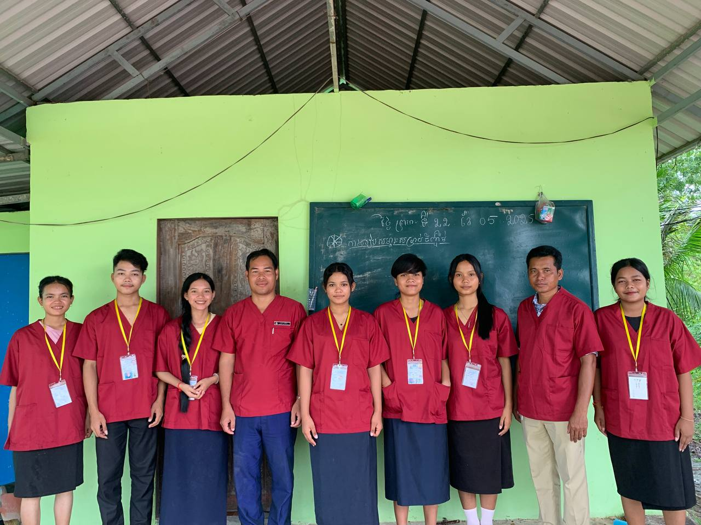
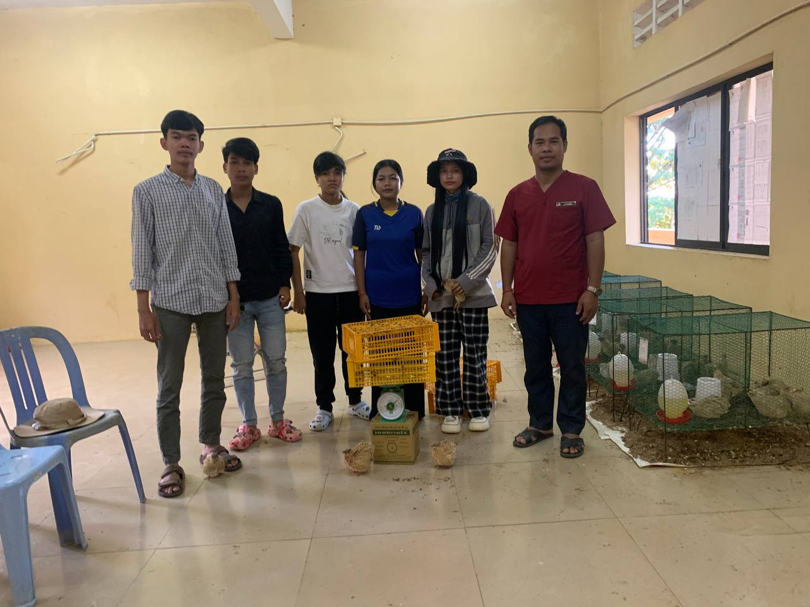
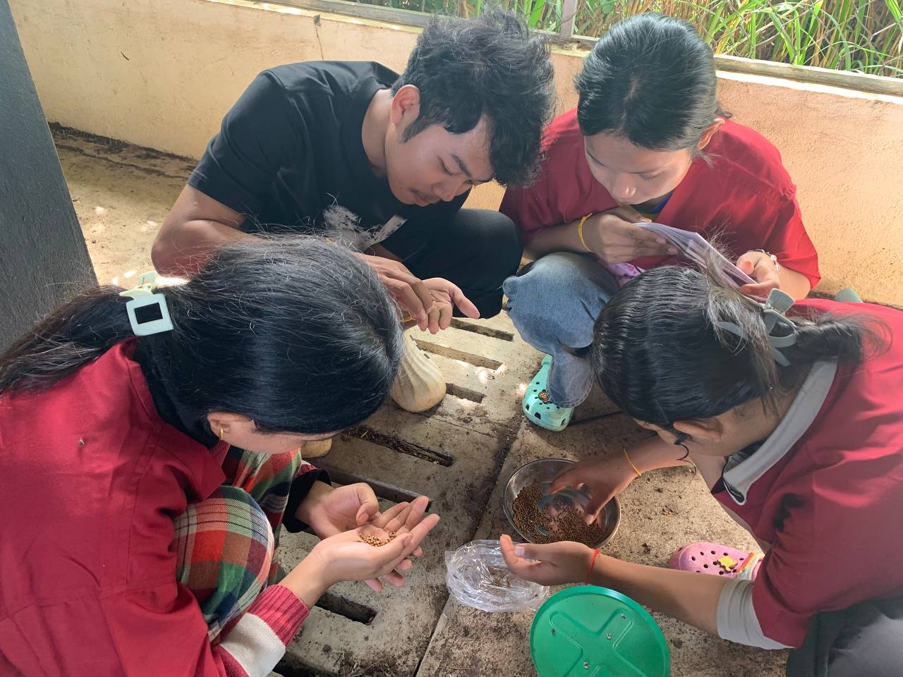
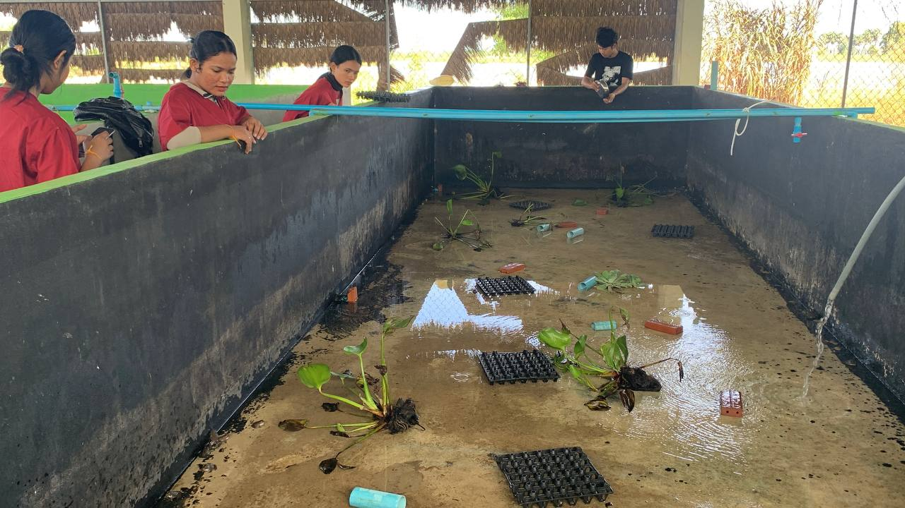
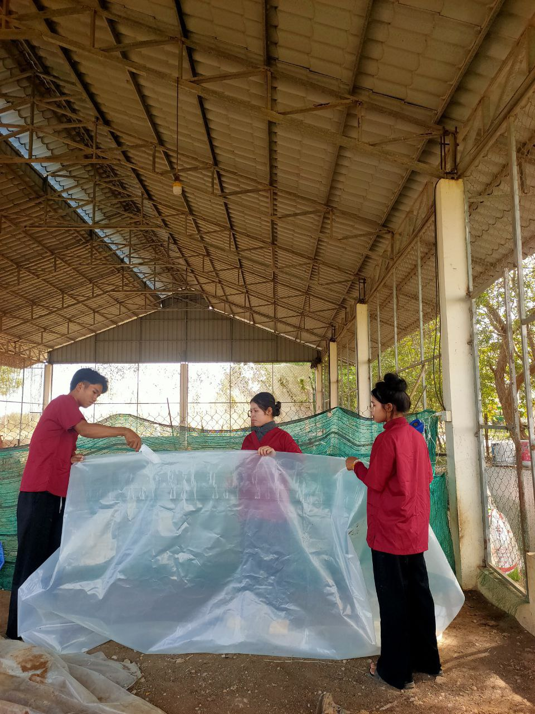
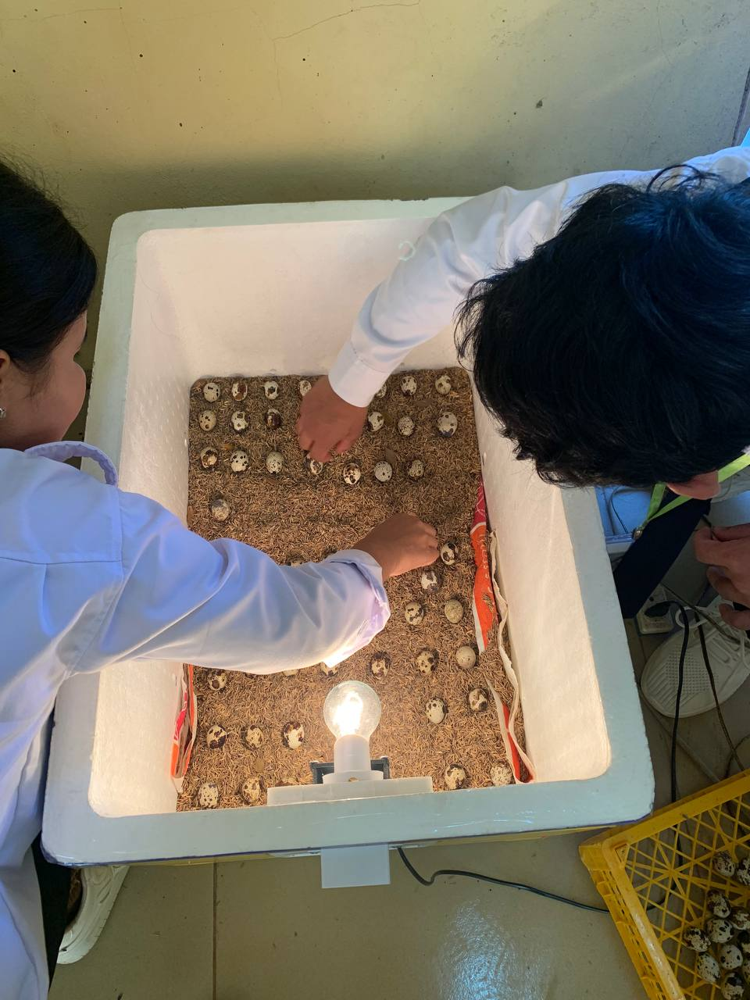

ជំនាញ ផលិកម្មសត្វ និង បសុព្យាបាល
យើងផ្តល់ការអប់រំគុណភាពខ្ពស់ ដើម្បីអភិវឌ្ឍសិស្សឲ្យមានចំណេះដឹង និងជំនាញសម្រាប់អនាគត។
យើងផ្តល់ការអប់រំគុណភាពខ្ពស់ ដើម្បីអភិវឌ្ឍសិស្សឲ្យមានចំណេះដឹង និងជំនាញសម្រាប់អនាគត។
កម្មវិធីសិក្សាលម្អិតជំនាញបសុវប្បកម្ម រៀបចំឡើងក្នុងគោលបំណងអភិវឌ្ឍសមត្ថភាពជំនាញដល់
សិស្សបសុវប្បកម្មស្របតាមតម្រូវការទីផ្សារការងារ
ដើម្បីបំពេញការងារក្នុងវិស័យផលិតកម្មកសិកម្មជាមួយ នឹងចំណេះដឹងជាមូលដ្ឋាន ជំនាញបច្ចេកទេស
ដែលទាក់ទងទៅនឹងបច្ចេកទេសចិញ្ចឹមសត្វ ការប្រើប្រាស់ ផលិតផលសាច់សត្វ
និងដឹកនាំសហគមន៍ឱ្យមានការអភិវឌ្ឍប្រកបដោយនិរន្តរភាព និងអាចបន្តការសិក្សា ពេញមួយជីវិត។
១.២/ សមត្ថភាពជំនាញរំពឹងទុកក្រោយបញ្ចប់ការសិក្សា
នៅពេលដែលសិស្សបញ្ចប់ឆ្នាំសិក្សាជំនាញបសុវប្បកម្ម តាមរយៈកម្មវិធីសិក្សាលម្អិតនេះសិស្សនឹង
ទទួលបានចំណេះដឹងប្រកបដោយគុណភាពខ្ពស់ តាមរយៈការសិក្សាទ្រឹស្តី ការអនុវត្តផ្ទាល់ ទស្សនកិច្ចសិក្សា
ការចុះកម្មសិក្សានៅតាមកសិដ្ឋាន ការសិក្សាស្រាវជ្រាវពីស្ថានភាពជាក់ស្តែង
និងការងារគម្រោងតាមរយៈការ ពិសោធន៍ និងអង្កេត។
សមត្ថភាពបច្ចេកទេសជំនាញដែលសិស្សនឹងទទួលបានមានដូចខាងក្រោម៖
ក- បច្ចេកទេសនៃការចិញ្ចឹមសត្វ បង្កាត់ពូជសត្វ និងសុខាភិបាលសត្វ ។
ខ- បច្ចេកទេសនៃការផលិតសម្ភារៈកសិកម្មបន្ទាប់បន្សំដោយប្រើប្រាស់វត្ថុធាតុដើមនៅក្នុងតំបន់។
គ- ប្រតិបត្តិនូវបច្ចេកទេសទំនើបទាក់ទង ទៅនឹងការប្រតិបត្តិគ្រឿងម៉ាស៊ីនក្នុងកសិដ្ឋាន ឧបករណ៍
ចិញ្ចឹមសត្វ និងឧបករណ៍នេសាទផ្សេងៗ។
ឃ- ប្រតិបត្តិលើវិធីសាស្ត្រទប់ស្កាត់ជំងឺលើសត្វ វិធីសាស្ត្ររៀបចំគម្រោងចិញ្ចឹមសត្វ
វិធីសាស្ត្រភ្ញាស់ និងការរៀបចំរោងភ្ញាស់ប្រភេទបក្សី ។
ង- បណ្តុះគំនិតក្នុងការស្ទង់មតិ ការស្រាវជ្រាវ ការធ្វើគម្រោង ការយល់ដឹងពីសហគមន៍ជនបទ និង
សមត្ថភាពលើការគ្រប់គ្រងអាជីវកម្មខ្នាតតូច និងផ្នត់គំនិតជាអ្នកផ្តល់សេវាកម្ម។
២.១/ ការតម្រង់ទិសសម្រាប់អនាគត
ការតម្រង់ទិសសម្រាប់អនាគត់ជាចំណុចដៅរយៈពេលវែងហើយមុខងារនៃការអប់រំ គឺជាការកសាង
វប្បធម៌សង្គមឡើងវិញ អភិវឌ្ឍគុណវុឌ្ឍនៃស្រទាប់មនុស្សជំនាន់ក្រោយ ការចែកចាយមនុស្សដែលមាន
សមត្ថភាពសម្រាប់មុខដំណែងផ្សេងៗក្នុងសង្គម និងការធ្វើសមាហរណកម្មសង្គម (Fend, 2006: 49-51) ។
ការអប់រំនៅសាលារៀនមិនអាចកំណត់បានថា ត្រូវប្រើពេលវេលាមួយឆមាស ឬមួយឆ្នាំសិក្សានោះឡើយ។
វាជាគម្រោងដែលមានរយៈពេលវែងជាងអាយុមនុស្ស១ជំនាន់។ ការអប់រំបច្ចេកទេស ក៏គួរត្រូវបានអនុវត្តផង
ដែរសម្រាប់អនាគត។ ការតម្រង់ទិសទៅរកអនាគតការអប់រំបច្ចេកទេសនៅប្រទេសកម្ពុជា មានទិដ្ឋភាព៣
យ៉ាងគឺ៖
ទី១ ក្រុមគោលដៅ៖ ការអប់រំបច្ចេកទេសត្រូវបានសម្របសម្រួលសម្រាប់យុវជន និងយុវនារីនៅ
សាលាចំណេះទូទៅនិងបច្ចេកទេស (ថ្នាក់ឆ្នាំទី១ ដល់ឆ្នាំទី៣)។ ជីវិតការងាររបស់ពួកគេអាចមានរយៈពេល
ទំព័រ៣
ជាង៤០ឆ្នាំ ក្រោយពេលបញ្ចប់ការសិក្សាពីសាលារៀន។ ការសិក្សានៅវ័យនេះមានឥទ្ធិពលទៅលើជីវិត
ទាំងមូលរបស់ពួកគេ។
ទី២ ការកសាងខ្លឹមសារសិក្សា៖ ចំណេះដឹង និងបណ្តាបំណិនមានការប្រែប្រួលយ៉ាងឆាប់រហ័ស
នៅគ្រប់ទីកន្លែង។ សិស្សានុសិស្សមិនត្រឹមតែសិក្សាយកចំណេះដឹងដែលបានដៅទុកប៉ុណ្ណោះទេ ប៉ុន្តែក៏
ត្រូវសិក្សាផងដែរ ការអប់រំបច្ចេកទេសវិជ្ជាជីវៈនៅមធ្យមសិក្សាទុតិយភូមិ មានលក្ខណៈខុសពីការបណ្តុះប
ណ្តាលវិជ្ជាជីវៈដែលមានរយៈពេលខ្លី។
ទី៣ ការសិក្សាពេញមួយជីវិត៖ ការបណ្តុះឱ្យមានការស្រឡាញ់ការសិក្សា ព្យាយាមតស៊ូ ដោះ ស្រាយបញ្ហា
នឹងបង្កលក្ខណៈឱ្យពួកគេរត់រកការងារ និងបន្តការសិក្សាពេញមួយជីវិតបាន។ ដូចគ្នានេះដែរ
ការអប់រំបច្ចេកទេសវិជ្ជាជីវៈនៅមធ្យមសិក្សាទុតិយភូមិ មានលក្ខណៈខុសពីការបណ្តុះបណ្តាលវិជ្ជាជីវៈដែល
មានរយៈពេលខ្លី។
៣.១/ ការរៀបចំកម្មវិធីសិក្សា និងការបែងចែកម៉ោងសិក្សាតាមកម្រិតស្តង់ដា
៣.១.១/ រចនាសម្ព័ន្ធកម្មវិធីសិក្សា
កម្មវិធីសិក្សាផ្នែកអប់រំបច្ចេកទេសរួមមាន៖ មុខវិជ្ជាសិក្សា សកម្មភាពក្រៅម៉ោងសិក្សា
និងកម្មសិក្សា។ មុខវិជ្ជាសិក្សាត្រូវបានបែងចែកជាមុខវិជ្ជាចំណេះទូទៅ និងមុខវិជ្ជាវិជ្ជាជីវៈ។
មុខវិជ្ជាចំណេះទូទៅ៖ មានអក្សរសាស្ត្រខ្មែរ គណិតវិទ្យា កុំព្យូទ័រ សីលធម៌-ពលរដ្ឋវិជ្ជា អប់រំកាយ
និងកីឡា ជីវវិទ្យា និងគីមីវិទ្យា។ បំណែងចែកម៉ោងសិក្សាតាមកម្រិតស្តង់ដា សម្រាប់មុខវិជ្ជា
ចំណេះទូទៅត្រូវបានអនុវត្តដូចគ្នាសម្រាប់មុខវិជ្ជាវិជ្ជាជីវៈ។
បច្ចេកទេស មុខវិជ្ជាវិជ្ជាជីវៈ៖ រួមមានមុខវិជ្ជាបច្ចេកទេស និងមុខវិជ្ជាវិជ្ជាជីវៈតាមមូលដ្ឋាន។
មុខវិជ្ជា ត្រូវបានរៀបចំឡើងដើម្បីជួយសិស្សឱ្យសម្រេចនូវគោលដៅអប់រំតាមមុខជំនាញបច្ចេកទេស នីមួយៗ។
មុខវិជ្ជាវិជ្ជាជីវៈតាមមូលដ្ឋាន ត្រូវបានរៀបចំឡើង ដើម្បីជួយសិស្សឱ្យរៀនអនុវត្តជាក់ស្តែងស្រប
តាមតម្រូវការទីផ្សារការងារក្នុងមូលដ្ឋាន។ មុខវិជ្ជាវិជ្ជាជីវៈ
ត្រូវបានរៀបចំជាតារាងដែលមានគោលដៅអប់រំ ទៅតាមមុខជំនាញបច្ចេកទេសនីមួយៗ។
កម្មសិក្សា ៖ បានផ្តល់ឱកាសឱ្យសិស្សទទួលបានបទពិសោធតាមរយៈការអនុវត្ត
ទំព័រ៦
ការងារនិងដើម្បីរៀនអំពីចំណេះដឹង និងបំណិនក្នុងការបំពេញការងារជាក់ស្តែង ។ ម៉ោងសម្រាប់កម្មសិក្សា
ប្រតិបត្តិមិនត្រូវបាន រាប់បញ្ចូលក្នុងកម្មវិធីសិក្សាផ្នែកអប់រំបច្ចេកទេសទេ។
បន្ទាប់ពីសិស្សបានបញ្ចប់កម្មវិធីសិក្សាជំនាញផលិតកម្មសត្វនិងបសុព្យាបាលឆ្នាំទី១
សិស្សនឹងទទួលបាននូវសមត្ថភាព
ដូចខាងក្រោម ៖
ក- បច្ចេកទេសក្នុងការចិញ្ចឹមជ្រូកទូទៅ ការគ្រប់គ្រងបរិស្ថានចិញ្ចឹមសត្វនៅក្នុងកសិដ្ឋាន
ការគ្រប់គ្រងឧបករណ៍និងប្រើប្រាស់ឧបករណ៍ជំនួយកម្លាំង ថែទាំសុខភាពសត្វ ការកែ ប្រែគុណភាពដី និងជី
ប្រព័ន្ធកសិកម្មចម្រុះ និងមូលដ្ឋានរោងជាង។
ខ- ប្រតិបត្តិលើប្រព័ន្ធដាំដុះ និងចិញ្ចឹមសត្វបែបកសិកម្មជីវចម្រុះ ឧបករណ៍ជំនួយកម្លាំង
ក្នុងកសិដ្ឋាន ការងាររោងជាងតាមបច្ចេកទេសទំនើប។
គ- បណ្តុះគំនិតសហគ្រិនភាពក្នុងការធ្វើការអាជីវកម្ម និងគ្រប់គ្រងអាជីវកម្មខ្នាតតូចផ្នែក កសិកម្ម។
បន្ទាប់ពីសិស្សបានបញ្ចប់កម្មវិធីសិក្សាជំនាញផលិតកម្មសត្វនិងបសុព្យាបាលត្រឆ្នាំទី២
សិស្សនឹងទទួលបាននូវសមត្ថភាព
ដូចខាងក្រោម ៖
ក- បច្ចេកទេសក្នុងការផលិតចំណីសត្វ ការប្រើប្រាស់ចំណីសត្វ ការបង្កាត់ពូជសត្វតាមបែប ធម្មជាតិ
និងសប្បនិម្មិត ការភ្ញាស់ ការចិញ្ចឹមបក្សី និងការចិញ្ចឹមគោទឹកដោះ។
ខ- ប្រតិបត្តិលើវិធីសាស្ត្ររៀបចំគម្រោងចិញ្ចឹមសត្វប្រភេទសត្វក្រពះទោល សត្វទំពារអៀង
និងបក្សី។
គ- បណ្តុះទម្លាក់សិក្សាស្រាវជ្រាវ ស្ទង់មតិ និងធ្វើការងារគម្រោងដើម្បីបណ្តុះគំនិតច្នៃប្រឌិត
ប្រកបដោយសមត្ថភាពជំនាញ។
បន្ទាប់ពីសិស្សបានបញ្ចប់កម្មវិធីសិក្សាជំនាញផលិតកម្មសត្វនិងបសុព្យាបាលឆ្នាំទី៣
សិស្សនឹងទទួលបាននូវសមត្ថភាព
ដូចខាងក្រោម ៖
ក- បច្ចេកទេសក្នុងការចិញ្ចឹមត្រី និងការបង្កាត់ពូជត្រី ការចិញ្ចឹមគោសាច់ ការចិញ្ចឹមក្របី
ការរកែច្នៃផលិតផលសាច់សត្វ និងបច្ចេកទេសដាំដំណាំចំណីសត្វ។
ខ- ប្រតិបត្តិវិធីសាស្ត្រគ្រប់គ្រងបែបថ្មី ជាពិសេសយល់ពីបញ្ហារបស់សហគមន៍ និងអាច
ក្លាយជាអ្នកមានសមត្ថភាពគ្រប់គ្រាន់ដើម្បីដោះស្រាយបញ្ហាទាំងអស់នេះ។
គ- បណ្តុះទម្លាក់សិក្សាស្រាវជ្រាវ ស្ទង់មតិ និងធ្វើការងារគម្រោងបង្កើតគំនិតច្នៃប្រឌិត
ប្រកបដោយសមត្ថភាពជំនាញខ្ពស់។

ការពិសោធន៍សត្វមាន់ ដើម្បីធ្វើការវិភាគ

ការពិសោធន៍សត្វមាន់ ដើម្បីធ្វើការវិភាគ

ការពិសោធន៍សត្វមាន់ ដើម្បីធ្វើការវិភាគ

ការចុះអនុវត្តផ្ទាល់នៅតាមភូមិស្រុក

ការចុះអនុវត្តផ្ទាល់នៅតាមភូមិស្រុក

ការចុះអនុវត្តផ្ទាល់នៅតាមភូមិស្រុក

ការចិញ្ចឹម និងថែទាំសត្វគ្រួចរបស់សិស្សានុសិស្ស

ការជ្រើសរើសចំណី ដើម្បីចិញ្ចឹមសត្វគ្រួចឲបានត្រឹមត្រូវ

ការរៀបចំអាងចិញ្ចឹមសត្វកង្កែបរបស់សិស្សានុសិស្ស

ការរៀបចំអាងចិញ្ចឹមសត្វកង្កែបរបស់សិស្សានុសិស្ស

ការរៀបចំភ្ញោះពងក្រួចយកកូន

ការរៀបចំភ្ញោះពងក្រួចយកកូន